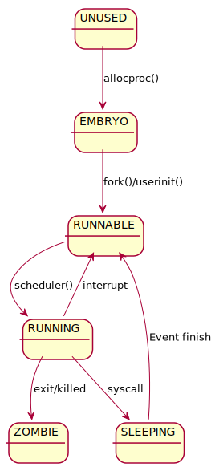

C语言
指针
技巧
操作系统
操作系统导论
指针101
声明指针
*将变量声明为指针。
类型 * 变量名。
type * var;
*运算符重载
乘法运算符
10 * 20
声明指针
int a = 10;
int * p = &a;
解引用指针
使用指针变量来访问指针变量存储的地址指向的对象。
*p = 20;
阅读指针相关声明
在阅读指针的声明时，从右向左读，会更加容易一些
例1:
const int* a;
指针所指向的内容是常量不可变 (不可以通过指针改变它，并不是他本身不可以作为左值）
例2:
int * const a;
指针本身是常量不可变，只能指向它。
例3:
const int * const a;
两者都不可变
例4:
const int ** a;
a是一个指向const int *指针的指针
例5:
int ** const a；
a是一个指向int*的指针，且a被const修饰，本身是常量不可变
取地址
int a = 10;
int * p = &a;
给指针赋值的时候要求，指针指向的对象类型相同，
float a = 10;
int * p = &a;
如果指针和地址指向的对象的类型不匹配，编译器会报错，
error: cannot convert ‘float*’ to ‘int*’ in initialization
2 | int * p = &a;
| ^~
| |
| float*
NULL
NULL值意味着指针不指向任何对象。 一般定义如下
#define NULL ((void *)0)
void *指针
void *是通用指针类型，它去掉了指针指向的对象的类型属性。
可以用来存放任何数据类型的地址。
- 任何指针都可以被赋值给
void *指针，void *指针也可以被转换成其他类型的指针 void *类型指针指可以用作数据指针，不能用作函数指针
不应该对void *指针进行整数加减运算，这样做没有意义，而且编译器也会报警告信息。
虚拟内存
对于运行在操作系统上的应用程序来讲，指针中的地址一般不是实际的物理地址。
应用程序使用的是经过映射的虚拟地址，虚拟地址不会改变， 而实际的地址会被操作系统映射到不同的物理内存地址。 一般来说，程序员也不需要关心实际的物理地址是什么。
动态内存管理
动态内存分配
// 分配内存
type * p = (type*) malloc(sizeof(type));
// 使用内存
...
// 释放内存
free(p);
内存被释放之后，就不应该再访问它了。
常见问题
内存泄漏
对象被使用完之后，没有被释放。
导致内存泄漏的原因：
- 丢失内存地址
- 应该调用free函数但是没有被调用
如果从堆管理器中申请的内存，但是没有及时的释放。 这会导致程序可以使用的内存变少，最终需要内存的时候，调用malloc会出错， 导致程序终止。
1.丢失地址
int * pi = (int*)malloc(sizeof(int));
*pi = 5;
pi = (int*)malloc(sizeof(int));
第一次被分配的内存空间，在第二次分配内存之后就没有办法找到了。 这时，第一次被分配的内存空间就没有办法正常的释放给堆管理器。
2.隐式内存泄漏
min宏的实现
通过函数实现最小值函数
通过函数来实现最小值：
int min(int i, int j)
{
return i < j ? i : j;
}
不能支持更多的类型，比如float类型的最小值函数的逻辑和int类型是一样的， 但是需要再实现一个min_float函数。
思路
使用宏定义来实现
#define MIN(a, b) ((a) < (b) ? (a) : (b))
普通情况下使用MIN(i, j)会正常被宏替换成((i) < (j) ? (i) : (j))，
这并不会有什么问题，但如果像调用函数实现的min(i++, j++)的时候，这种宏实现就会出问题了；
MIN(i++, j++)会被替换成((i++) < (j++) ? (i++) : (j++))
改进
可以利用 GNU C 扩展中typeof的语法来实现这个宏。
#define MIN(x, y) ({ \
typeof(x) _min1 = (x); \
typeof(y) _min2 = (y); \
(void) (&_min1 == &_min2); \
_min1 < _min2 ? _min1 : _min2; })
1.({})表达式
C语言中，花括号{}表达式的语义可以理解成把多条语句组合成一条复合语句的指令， 而小括号()表达式则是将表达式的值设成复合语句最后一条指令的值。
花括号表达式还限定了_min1和_min2这两个变量的作用域，可以让这两个临时变量名，
不会影响到外边的程序。
2.typeof
GNU C 的一个扩展，提取括号中表达式的类型，并将其应用在typeof出现的地方。 类似于C++中auto关键字的类型推导的作用。
3.(void) (&_min1 == &_min2)
对不同类型的指针进行比较操作，编译器会报warning。 这一行是要在编译期做检查。 因为这条语句对于程序没有影响，在编译时会被优化掉，不会影响到执行期的逻辑。
操作系统介绍
操作系统做了什么？
- 资源的虚拟化
- CPU
- 内存
- 磁盘
- 其他设备
- 处理并发问题
- 持久化存储文件
虚拟化CPU
在硬件的帮助下，操作系统负责提供系统拥有非常多虚拟CPU的假象。
#include <stdio.h>
#include <stdlib.h>
#include <unistd.h>
int main(int argc, char * argv[])
{
if (argc != 2)
{
fprintf(stderr, "usage: cpu <string>\n");
exit(1);
}
char * str = argv[1];
while (1)
{
sleep(1);
printf("%s\n", str);
}
return 0;
}
./cpu A &; ./cpu B &; ./cpu C &; ./cpu D &;
虚拟化内存
操作系统为每个进程提供私有虚拟内存地址空间。 操作系统以某种方式映射到机器的物理内存。 一个进程不会影响到其他进程的地址空间。
#include <stdio.h>
#include <stdlib.h>
#include <unistd.h>
#include <assert.h>
int main()
{
int * p = (int*)malloc(sizeof(int));
assert(p != NULL);
printf("(%d) memory address of p:0x%p\n", getpid(), p);
return 0;
}
./mem &; ./mem &;
并发
进程看上去像是在同一时间内执行的。
#include <stdio.h>
#include <stdlib.h>
#include <pthread.h>
volatile int counter = 0;
int loops;
void * worker(void * arg)
{
for (int i=0; i < loops; i++)
{
counter++;
}
return NULL;
}
int main(int argc, char * argv[])
{
if (argc != 2)
{
fprintf(stderr, "usage: threads <value>\n");
exit(1);
}
loops = atoi(argv[1]);
pthread_t p1, p2;
printf("Initial value: %d\n", counter);
pthread_create(&p1, NULL, worker, NULL);
pthread_create(&p2, NULL, worker, NULL);
pthread_join(p1, NULL);
pthread_join(p2, NULL);
printf("Final value: %d\n", counter);
return 0;
}
./threads 20000
持久性
持久存储数据
#include <stdio.h>
#include <unistd.h>
#include <assert.h>
#include <fcntl.h>
#include <sys/types.h>
int main()
{
int fd = open("/tmp/file", O_WRONLY | O_CREAT | O_TRUNC, S_IRWXU);
assert(fd > -1);
int rc = write(fd, "hello world\n", 13);
assert(rc == 13);
close(fd);
return 0;
}
./file_write
操作系统设计目标
- 建立抽象，让操作系统方便和易于使用
- 最小化操作系统的开销，实现高性能
- 在应用程序之间以及操作系统和应用程序之间的提供保护
- 提供高度的可靠性
进程的定义
非正式定义
进程是运行中的程序
怎么表示进程
进程的机器状态可以用来表示进程。 进程的机器状态包括：
- 内存
- 指令
- 可读内存
- 可写内存
- 寄存器
- 通用寄存器，保存进行执行相关的数据
- 特殊寄存器
- 程序计数器（PC/IP），要执行的下一条指令
- 栈指针（SP）函数调用栈，局部变量相关数据
- 进程访问的设备，即I/O相关信息（当前进程打开的文件列表）
概念总结
程序 程序是指编译过的、可执行的二进制代码；保存在磁盘这种存储介质中，不运行。
进程 进程指正在运行的程序。
进程ID 进程的标识符，pid。操作系统保证在任意时刻pid都是唯一的。
父进程 创建进程B的那个进程A成为B进程的父进程。
进程相关API
操作系统提供了哪些对进程的操作？
- 创建
- 销毁
- 等待进程停滞
- 其他操作（暂停、恢复等）
- 获取进程状态
进程创建
如何将程序转化为进程
- 从磁盘加载到内存
- 加载对象
- 代码
- 静态数据
- 加载方式
- 尽早加载（在进程执行之前全部加载）
- 惰性加载（用到的时候再加载）
- 加载对象
- 准备运行时栈
- 完成其他初始化任务，例如I/O设备初始化、文件描述符
- 启动程序，转移CPU控制权
进程状态

- running: 进程正在处理器上运行
- ready: 进程已经准备好，但是由于某种原因，操作系统选择不在此时运行
- blocked: 进程执行了某个操作，直到某个时间发生才会准备运行""
xv6中进程相关数据结构
寄存器上下文
用于保存内核上下文切换时的寄存器数据。
// proc.h
struct context {
uint edi;
uint esi;
uint ebx;
uint ebp;
uint eip;
};
类型
这里用uint32_t会不会更加好一点，
如果64位的机器应该是uint64_t。
缺少一些寄存器
这里并不需要保存所有的段寄存器（例如：%cs），因为这些寄存器对于内核的 上下文切换来说是常量。
也不需要保存%eax、%ecx、%edx这些寄存器；因为按照x86的惯例， 这些寄 存器会被调用者保存在函数调用栈里。
存储位置
上下文的信息存储在它们所描述的栈的栈底位置；栈指针会指向上下文结构体。
上下文的内存布局符合swtch.S中在“切换栈”那段注释中对于栈的内存布局
的描述。
eip
切换内存地址的操作不需要显式地保存eip寄存器，但是这个寄存器是在栈里被 保存的；allocproc()这个函数会操作它。
进程状态枚举
进程可能处于的状态。
// proc.h
enum procstate
{
UNUSED,
EMBRYO,
SLEEPING,
RUNNABLE,
RUNNING,
ZOMBIE
};
-
- UNUSED： 进程创建之前的状态。
-
- EMBRYO：胚胎状态，初始状态，进程在创建时处于的状态。
-
- SLEEPING：睡眠状态，等待某个事件发生以开始执行。
-
- RUNNABLE：已经准备好执行。
-
- RUNNING：正在处理器中执行。
-
- ZOMBIE：僵尸状态，已退出但未清理的最终状态。
xv6进程状态转换图 
进程控制块
用于存储关于进程的信息。
struct proc {
uint sz; // 占用内存大小 (bytes)
pde_t* pgdir; // 指向页表的指针
char *kstack; // 该进程内核栈的底地址
enum procstate state; // 进程状态
int pid; // 进程ID
struct proc *parent; // 父进程控制块
struct trapframe *tf; // 当前系统调用的trap frame
struct context *context; // 进程上下文
void *chan; // 如果非零，指向睡眠队列
int killed; // 如果非零，则被杀掉
struct file *ofile[NOFILE]; // 打开的文件信息
struct inode *cwd; // 工作目录
char name[16]; // 进程名（调试用）
};
trap frame
用来储存用户空间的寄存器。 调用trap陷入内核的时候（执行系统调用）， CPU从用户空间切换到了内核空间。 trap frame这段内存用来保存用户空间的寄存器数据。
进程API
获取pid和父进程的pid（ppid）
获取进程ID
#include <sys/types.h>
#include <unistd.h>
pid_t getpid(void);
获取父进程ID
#include <sys/types.h>
#include <unistd.h>
pid_t getppid(void);
fork系统调用
通过fork系统调用，可以创建一个和当前进程一样的进程。
#include <sys/types.h>
#include <unistd.h>
pid_t fork(void);
fork调用成功，会创建一个新的进程。 调用者在创建了新进程之后依然会正常执行。
父进程和子进程在fork调用完成之后会执行同样的程序。 它们的不同在于在父进程中，fork会返回子进程的pid。 而子进程中的fork会返回0.
父进程和子进程的区别：
- pid不同
- 子进程的ppid是父进程的pid
- 子进程的资源统计信息被清零
- 父进程的信号不会被子进程继承
- 父进程的文件锁不会被子进程继承
出错返回-1，并设置errno的值：
- EAGAIN：内核申请资源失败
- ENOMEM：内核内存不足
#include <stdio.h>
#include <stdlib.h>
#include <unistd.h>
int main(int argc, char * argv[])
{
printf("hello world (pid: %d)\n", (int)getpid());
int rc = fork();
if (rc < 0)
{
fprintf(stderr, "fork failed\n");
exit(1);
}
else if (rc == 0)
{
printf("hello, I'm child of %d (pid: %d)\n",
(int)getppid(), (int)getpid());
}
else
{
printf("hello, I'm parent of %d (pid: %d)\n",
rc, (int)getpid());
}
return 0;
}
wait系统调用
wait()系统调用用于等待进程和终止。
#include <sys/types.h>
#include <sys/wait.h>
pid_t wait(int * status);
如果子进程没有终止，调用会阻塞； 调用成功，返回已终止的子进程的pid； 出错则返回-1，并设置errno的值：
- ECHILD：调用进程没有任何子进程
- EINTR：在等待子进程结束时收到信号，调用提前返回
status
返回子进程的附加信息。 这些信息用比特位来表示。可以用下面的这些宏来解释：
#include <sys/wait.h>
int WIFEXITED(status); // 程序正常结束（调用__exit()）
int WIFSIGNALED(status); // 因为信号导致进程终止
int WIFSTOPPED(status); // ptrace调试情况下，进程停止
int WIFCONTINUED(status); // ptrace调试情况下，进程继续执行
int WEXITSTATUS(status); // 正常退出情况下（WIFEXITED），进程的返回值
int WTERMSIG(status); // 信号终止情况下（WIFSIGNALED），导致终止的信号编号
int WSTOPSIG(status); // 导致信号停止的信号编号
int WCOREDUMP(status); // 信号终止的情况下（WIFSIGNALED），生成coredump文件
等待特定进程
#include <sys/types.h>
#include <sys/wait.h>
pid_t waitpid(pid_t pid, int * status, int options);
options是一个flag：
- WNOHANG：不要阻塞
- WUNTRACED：即使调用进程没有跟踪子进程，也会设置WIFSTOPPED位；对shell有帮助
- WCONTINUED：即使调用进程没有跟踪子进程，也会设置WIFCONTINUED位；对shell有帮助
errno多了一个EINVAL表示参数非法
僵尸进程
如果子进程在父进程之前终止，内核会把该进程设置成特殊的进程状态。 处于这种状态的进程称为僵尸进程。
这是为了让父进程获取子进程的状态而设计的，如果子进程终止，就消失。 那么，父进程无法获取到任何关于子进程的信息。
僵尸进程只会保存可能有用的信息。僵尸进程会等待父进程来查询状态，只 有当父进程查询到已终止的子进程的状态的时候，这个子进程才会消失，不 再处于僵尸状态。
#include <unistd.h>
#include <stdio.h>
#include <stdlib.h>
#include <sys/types.h>
#include <sys/wait.h>
int main()
{
int status;
printf("Parent process: %d\n", (int)getpid());
pid_t pid = fork();
if (pid == -1)
{
fprintf(stderr, "fork failed.\n");
exit(1);
}
else if (pid == 0)
{
printf("Child process starts.\n");
sleep(60);
exit(123);
}
else
{
sleep(120); // for observing zombie proc status
pid = wait(&status);
}
printf("Child process %d exit.\n", (int)pid);
if (WIFEXITED(status)) // wait 120 seconds, exec `ps ax` after 60 seconds, the proc status turn into `Z+`.
printf("Normal termination with exit status: %d\n",
WEXITSTATUS(status));
if (WIFSIGNALED(status)) // manually kill child process
printf("Killed by signed: %d%s\n",
WTERMSIG(status),
WCOREDUMP(status) ? " (dumped core)" : "");
if (WIFSTOPPED(status))
printf("Stopped by signal=%d\n",
WSTOPSIG(status));
if (WIFCONTINUED(status))
printf("Continued\n");
return 0;
}